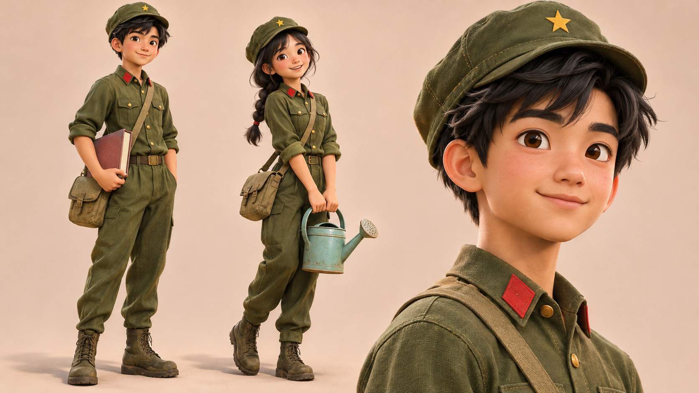
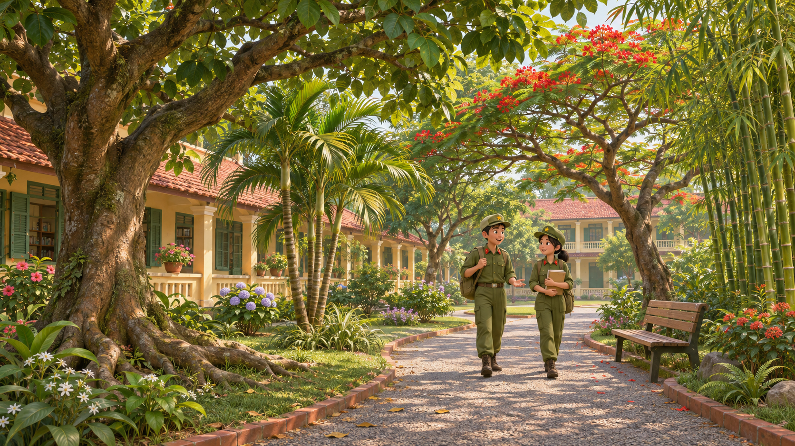
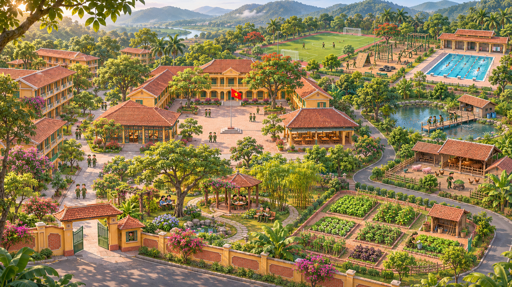
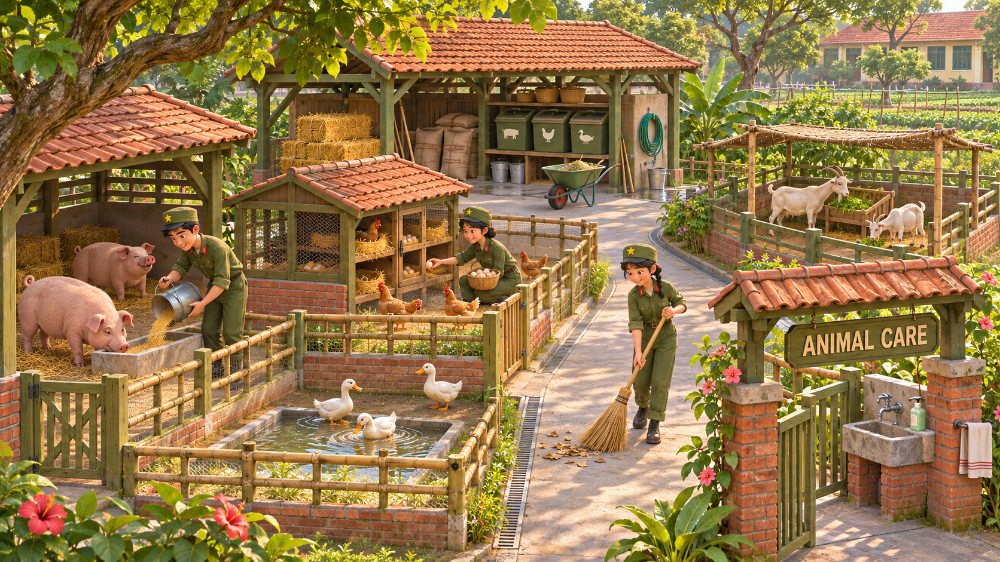
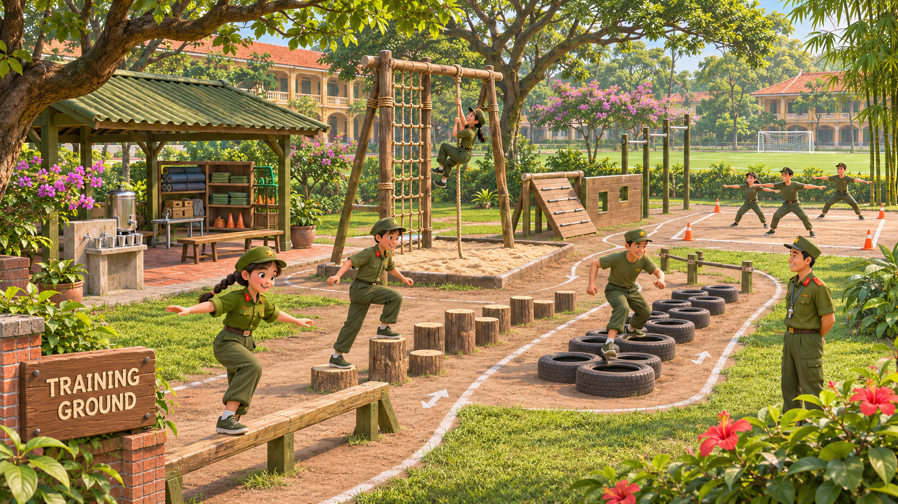
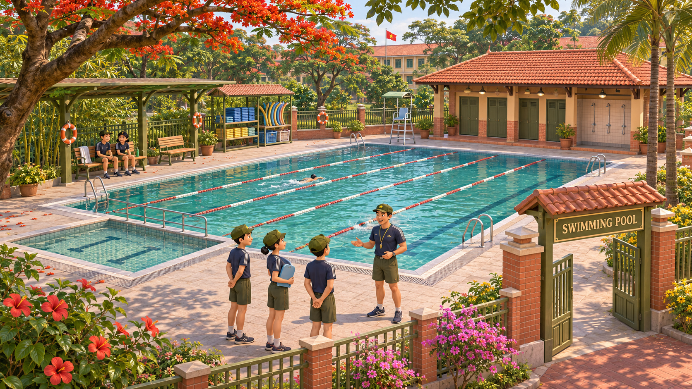
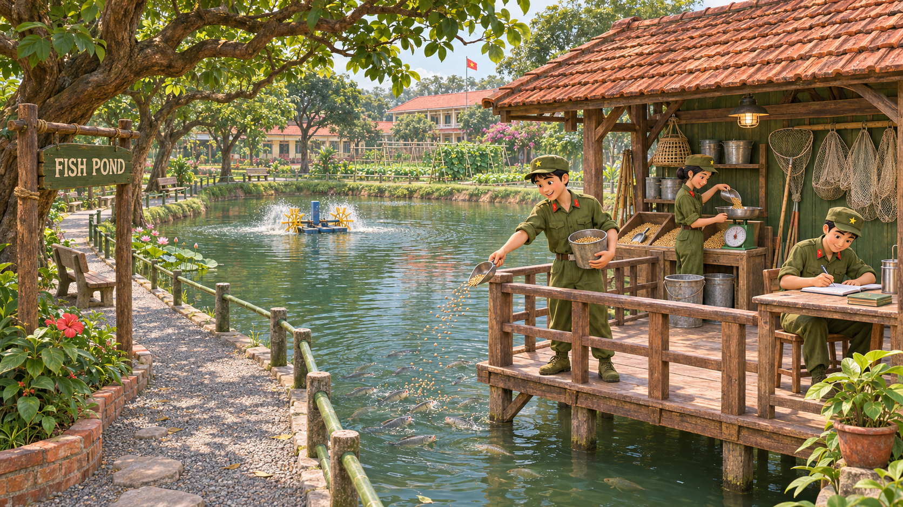

1. Nhân vật
Gương mặt, tóc, bàn tay và nếp vải được tạo hình mềm; giữ quân phục ô liu, cổ đỏ và sao nhỏ trên mũ.

2. Cây & cảnh quan
Cây bóng mát, phượng, cau và tre có cấu trúc thân/cành riêng, tán lá nhiều lớp và khoảng thoáng.

3. Tổng thể khuôn viên
Phân khu học tập, nội trú, đọc sách, tăng gia, chăn nuôi, hồ cá và thể thao; nối bằng các đường đi có cây che bóng.

4. Khu chăn nuôi
Chuồng heo, gà, vịt và dê có khu riêng, kho thức ăn, máng uống, lối phục vụ và điểm rửa tay.
Dự kiến: cho ăn, lấy trứng, bổ sung nước và quét dọn.

5. Sân tập
Các trạm giữ thăng bằng, bước lốp, leo dây, vượt bục thấp và tập đội hình có không gian tiếp cận rõ.
Dự kiến: nghe lệnh tiếng Anh rồi thực hiện bài tập vận động.

6. Hồ bơi
Bể tập, đường bơi, sàn đi lại, nhà thay đồ, vòi tắm và khu cất dụng cụ trong cùng một khu thể thao.
Dự kiến: luyện nghe hướng dẫn, chuẩn bị dụng cụ và tập bơi.

7. Hồ cá
Hồ nuôi có sàn cho ăn, nhà kho, cân thức ăn, sổ theo dõi, máy quạt nước và đường đi quanh bờ.
Dự kiến: đong thức ăn, cho cá ăn và ghi lại kết quả bằng tiếng Anh.
